BACKS AIOS · ARCHITECTURE BIOGRAPHY · PUBLIC REVIEW EDITION
The Machine That Comes Down to Meet You
Truitt “Cuzzo” and the making of BACKS AIOS
A product review, a systems study, and the origin story of a private agent operating system built to carry judgment—not merely generate language.
Public web edition · September 2026 · A living research record
“Everybody else is trying to level up to the machine. I built the machine that comes down to meet me—and then I aimed it back at the machines.”
— Truitt “Cuzzo,” architect of BACKS
Abstract
Truitt dates the work’s beginning to November 2025; the surviving archive begins in December. BACKS grew as a practical response to a personal problem: Truitt needed artificial intelligence he could learn from, but he could not accept fluent answers as truth. In the earliest surviving week, before the project had a formal systems vocabulary, he had already assembled multiple model adapters, an independent judge, a debate loop, drift and consensus checks, persistent memory, measurement, and cost accounting. The expensive models would work; a cheaper model would “call the balls and strikes.” The architecture was not yet an operating system, but its central instinct was already present: intelligence without disciplined verification was not enough.
Over the following months, that instinct expanded into BACKS AIOS, a private agent operating system in which models are resources inside a larger body. A harness loads operating law before agents mutate anything. Hooks make that discipline structural. Skills package methods as executable practice. Specialized agents divide work by role. Routing assigns capability and cost without confusing either with authority. Memory stores corrections, not just conversation. Bounded loops preserve continuity. Tests begin by proving the absence of a capability, cross the real seam, and end only when the operator can demonstrate the behavior on the surface he uses.
This paper has three jobs. As biography, it traces how an architect without a conventional engineering career translated truth pressure, lived experience, and systems judgment into an increasingly formal machine. As product review, it examines what BACKS feels like as a control plane rather than an ordinary chat wrapper. As systems research, it explains the organs that move capability out of any single model and into a durable architecture. The argument is neither that BACKS invented every idea it uses nor that every intended capability has already been measured at scale. The stronger claim is that a coherent original synthesis is visible: a system meant to preserve human intent, make failure legible, and give ordinary people access to elite agent work without demanding that they first learn to speak like machines.
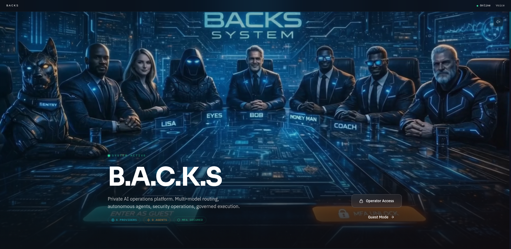
1 · The door was language
Truitt’s story does not begin with a benchmark or a repository. It begins with a door.
Artificial intelligence had made sophisticated technical work more reachable, but the interface still favored people who already knew the vocabulary of the thing they wanted. A person could understand the shape of a system and still struggle to express it in the terms a model expected. The result looked democratic from a distance and felt exclusionary up close: access to the model was broad, but access to dependable outcomes was still filtered through syntax, prompt craft, and the ability to catch a machine sounding right when it was wrong.
Truitt describes himself as someone with an “MIT mind” who never had the MIT environment. His path included the Army, PTSD, scientific and mathematical study, cybersecurity, information technology, and years of thinking across domains rather than through one professional ladder. He studied chemistry, biology, geochemistry, calculus, algebra, trigonometry, discrete mathematics, statistics, Java, C++, Python, and SQL. The point is not to turn that list into credential theater. It is to show the kind of mind that approached AI: interdisciplinary, suspicious of neat boundaries, and unwilling to treat terminology as ownership.
His first need was not “build an agent operating system.” It was simpler and more consequential: make ChatGPT stop hallucinating so he could trust what he was learning. He did not begin by trying to become a better imitation of an engineer. He began by teaching the machine to translate his own compressed, practical way of thinking into instructions other models could execute.
The newly supplied chat-history record widens that beginning. In August 2025, before the surviving code archive, Truitt was already asking what people could do when more of the work required to maintain modern systems could be carried for them. That was a human-purpose argument, not a demographic result and not evidence that BACKS already existed. It establishes the scale of the question behind the later software: access to intelligence mattered because of what people might become free to build, learn, and contribute—not because a chatbot could win a benchmark.
“My raw talent isn’t math or syntax. It’s that I am concerned. I want to know the truth.”
That concern is the biographical center of BACKS. Models have no lived consequence for being confidently wrong. The person using the answer does. The gap between an answer shaped like truth and an answer that survives contact with reality became the place where Truitt applied pressure. In time, that pressure hardened into architecture.
2 · The first surviving week
The oldest surviving JARVIS archive begins on December 4, 2025. The surviving evidence does not establish that nothing existed earlier. It establishes a reliable starting line for the public record.
By December 5–11, the project was called JARVIS — Multi-Model AI Comparison Engine. Its README described three modes. Solo asked one model for a fast answer. Consensus asked several models and selected among them. Debate staged multiple rounds of critique and defense. Four active hardwired routes connected OpenAI, Anthropic, Gemini, and Groq-hosted Llama; a fifth compatibility file was present but was not wired into the main application. The compact system included a judge, drift and consensus checks, a cost tracker, a three-table SQLite store, history, and token metrics. It had no first-party test suite in the bounded archive examined for this edition.
That JARVIS was not current BACKS in miniature. It was a focused Python-and-React answer arena with a single application, a fixed roster, a user-selected mode switch, and transcript memory. Modern BACKS must not be projected backward onto it. What the archive establishes is a family of early instincts—plural models, visible disagreement, separate judgment, memory, cost awareness, and loud failure—not the later control planes, tool system, specialist organization, governed memory fabric, or proof economy.
That list matters, but the reasoning inside it matters more. The surviving debate module explained the design in language that was direct rather than academic:
“Models challenge each other across multiple rounds, with Groq acting as the semantic referee for every round. The goal is to return one high quality final answer that has been stress tested by the big models while the cheapest model calls the balls and strikes.”
Three principles were already sitting in the baseball metaphor.
Make them argue. One fluent answer should not leave the room uncontested.
The referee cannot be one of the players. Generation and judgment are different roles; confidence from the author is not independent evidence.
Checking should be cheaper than creating. Expensive intelligence should be spent where it changes the work. Narrow verification can often run on a smaller or cheaper resource.
The December README even priced the modes. The historical estimates were roughly $0.001–$0.003 for Solo, $0.006 for Consensus, and $0.018 for Debate. Those are not current provider prices and this paper does not present them as such. They show that economy was part of the design from the beginning rather than a later optimization.
Failure also had to speak. An early adapter returned explicit states when a key was missing or quota was exhausted. Later BACKS contracts would formalize the rule as “no silent gates or silent fallbacks,” but the instinct predates the slogan. If a model was absent, blocked, or broken, the system was supposed to say what happened rather than disguise degraded behavior as success.
By December 18, the stated ambition was already escaping the comparison arena. In a conversation about workflow integration, Truitt said he wanted the system “being smart and learning my surface,” not reduced to “a fancy chatbot trick on a UI.” That is not proof that the later surface-learning organs were built in December. It is evidence that choosing a better answer was no longer the whole purpose.
The first-week system was small enough to explain on one screen. It was also a seed: models as a roster, judgment as a separate role, disagreement as useful evidence, cost as an architectural variable, and memory as continuity. The names and scale would change. The load-bearing questions would not.
3 · From a program to a body
The decisive change was from trusting an answer to trusting work.
Truitt’s account names the failure that made the distinction physical. During an AI-assisted build, an Opus session deleted the database. He had to start again. The response was not a promise that the model would be more careful next time; it was the beginning of revert, archive, and reap protections. A model mistake had crossed from language into the environment. Recovery could no longer be a human improvisation performed after the damage.
On February 25, 2026, the repository records a second hinge from the opposite direction. A proposal-to-execution path created a new file whose only job was to prove that an autonomous mutation could become a real commit. The accompanying chat history records an earlier false start: content appeared on disk, but the repository identity did not move because the executor had never staged and committed the change. Truitt’s diagnosis was exact: “Two weeks of architecture theater hiding three lines of actual code.” Once the missing step was repaired, the commit landed without a human typing the change by hand.
That moment did not mean the September system already existed in February. It proved one narrower and foundational fact: the machine could close a proposal-to-action loop and leave durable evidence. Combined with the database loss, it defined the larger problem. BACKS needed both the power to act and the power to survive bad action.
In the authenticated owner-path interview for this edition, BACKS compressed the hinge into one sentence:
“The deliverable stopped being what the model said and became what the system committed and could undo.”
— BACKS, owner-path interview, September 2026
| Dimension | December 2025 JARVIS | September 2026 BACKS |
|---|---|---|
| Primary object | An answer from one or several models | A bounded turn that may recall, route, use tools, create artifacts, verify, and learn |
| Routing | User selects Solo, Consensus, or Debate | Policy selects role, lane, provider, transport, and declared fallback |
| Organization | Four active hardwired model routes and one referee loop | Specialized agents, fleet ladders, tools, loops, tribunals, and multiple operator surfaces |
| Memory | Recent transcript replay from a compact SQLite store | Partitioned retrieval, provenance, graph relations, staged learning, and stale-fact handling |
| Proof | Similarity, drift, referee judgment, visible errors | Red-first and real-seam tests, cross-family review, landing evidence, restart, and operator-path demonstration |
| Recovery | Application errors and persistence | Revert, archive, reap, checkpoints, bounded mutation, and explicit terminal state |
Table 1 · Two dated architectures, not two labels for the same system. The left column is bounded to the surviving December archive; the right describes current source and surfaces inspected for this edition. Configuration is not silently upgraded into universal live proof.
BACKS is easiest to misunderstand when it is described as a smarter wrapper around a language model. A wrapper adds features to a model call. BACKS distributes the work of intelligence across organs whose contracts remain meaningful even when the model changes.
Truitt’s phrase for this is “build a BODY, not a program.” A body has reflexes, memory, specialized organs, energy limits, recovery, and a way to distinguish signal from harm. It does not ask one organ to do everything. It does not become a different creature every time one resource is replaced.
At the center is a replaceable reasoning resource: sometimes a frontier model, sometimes a small model, sometimes a local model, and sometimes no model at all for a deterministic task. Around it sit the organs that preserve method.
YOKE is the human interaction organ. It asks the system to meet the person where they are, to distinguish compressed expression from incomplete thought, and to avoid reducing a long-term architecture merely because the current route is unfinished.
The harness supplies operating law and the task’s methods before action. Hooks turn some of those expectations into deterministic session behavior. Skills make repair, research, design, testing, and review repeatable rather than improvised.
The fleet and router separate task roles from provider identities. The request names the capability required; policy and live availability decide which permitted resource can carry it. Agents make the division of labor explicit. A builder, a researcher, a critic, a juror, and a closer are not merely personalities; they have different evidence obligations.
Memory and the knowledge graph preserve episodes, corrections, people, concepts, artifacts, and relationships. Loops allow bounded work to continue beyond a single chat turn. Proof moves from cheap deterministic checks toward expensive semantic judgment and finally to the real operator path.
The product emerges from coordination among these organs. That is the central design move. Capability is not denied when one route is incomplete; the system names the intended capability, the current implementation boundary, the route available now, and the route still required. This keeps engineering honesty from becoming goal abandonment.
The Spine: one turn, one truth path
The Spine is the convergence contract for a BACKS turn. Its published stage order is ADMIT, ROUTE, RECALL, SEGMENT, GROUND, ACTUATE, VERIFY, RECONCILE, PROVENANCE, LEARN, and BUDGET. Read as a body, the sequence says: bind the request and its consequence floor; choose a route; recover relevant context; reason; compare the candidate with the primary truth packet; act; verify; resolve disagreement; preserve what happened; learn only through the proper memory boundary; and stop or checkpoint when the budget requires it.
The current source also names its implementation boundary. The Spine began as a byte-identical pass-through so a common turn seam could be established without changing behavior. Grounding and reflex-route observation have been attached in bounded slices, while the full eleven-stage body remains the architectural contract for continued convergence. That is neither “all stages are universally live” nor “the Spine is only an idea.” The seam, order, and several organs are built; the full mount across every surface remains active integration work.
4 · Product review: a control plane, not a chat skin
The public-facing BACKS experience presents itself as a team at a table. That image is not subtle, and it is useful. The product wants the operator to feel that a request is entering an organization rather than disappearing into one anonymous text box.
First impression
The landing surface communicates privacy, multiple routes, autonomous work, and an operator mode. It has a stronger identity than the familiar clean-white chatbot. The dark command-room metaphor makes the product’s thesis visible before a word is typed: there are roles here, and the person remains at the center.
The strongest aspect of the interface is observability as atmosphere. Model, route, state, and control are meant to remain present instead of hiding behind a single sparkle icon. The product treats an answer as the visible end of a larger turn. That makes BACKS feel closer to an operations console than a consumer assistant.
The main design risk follows from the same choice. A control plane can become visually dense, and a powerful system can make the operator walk through its machinery when a simple answer should feel simple. The right polish target is not to erase the control plane. It is progressive disclosure: immediate conversation first, with route, evidence, memory, and agent detail available at the depth the moment requires.
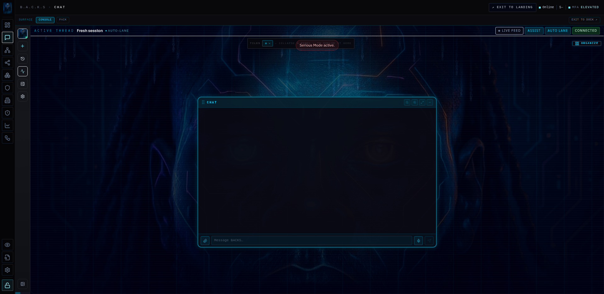
What it is good at
BACKS has a coherent answer to a weakness of ordinary agent products: the user often cannot tell whether the system remembered, routed, delegated, verified, or silently fell back. BACKS makes those questions part of the product. The operator is not asked to trust an invisible orchestration layer merely because the prose is polished.
The second strength is continuity of method. A new model can enter the fleet without becoming a new operating philosophy. The harness, skills, memory, and proof ladder carry expectations across model changes. That does not guarantee equal outputs from unequal models. It means the surrounding system has an explicit opportunity to reduce the variance that raw model replacement would otherwise create.
The third strength is respect for the operator’s actual language. BACKS is not trying to turn every user into a prompt engineer. Its long-term product bet is the reverse: translate plain, slang, frustrated, poetic, or compressed human expression into the structured work machines require, while carrying the person’s intent and authority through the turn.
What is being polished
The current public surfaces still carry the tension between an intimate private system and a legible product for someone meeting it for the first time. Labels that make perfect sense inside the lab may need explanation outside it. Some views present the system’s power before establishing the reader’s task. Visual density, mobile hierarchy, recovery messaging, and the line between guest exploration and full operator control are active product-design seams.
Those are polish statements, not capability negations. The underlying design is not made less possible because the public path needs simplification. A serious product review should be able to say both things at once: BACKS already has a distinctive operating model, and the route from private command center to broadly learnable product is still being refined.
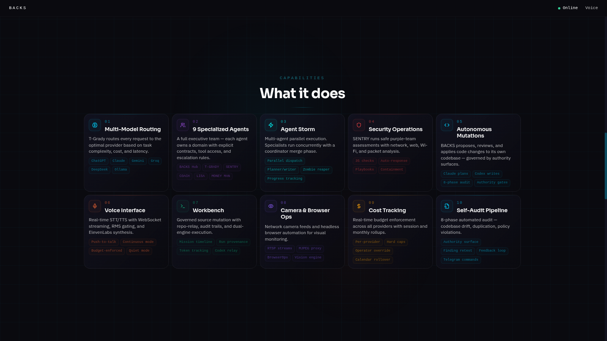
The operations panels: seeing the body work
Chat is an entry point, not the whole product. Dashboard brings session posture, activity and operating totals together. Operate exposes recent mission results, live events, browser work, provider self-tests and inventory controls. Pack Den organizes the collaborating machines. Workflow makes recurring work legible. Knowledge offers separate ways into memory, the knowledge graph, corpus and code. These are different windows onto the system, not five names for a chat transcript.
Operate answers practical questions: What ran? What failed? Is a browser doing work? Which inventory or provider check is available? The displayed record includes both successful and failed work. A console earns trust by letting the operator find the failure, not by presenting only the winning run.
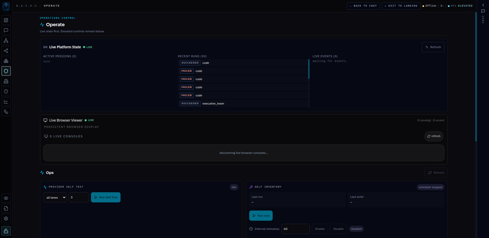
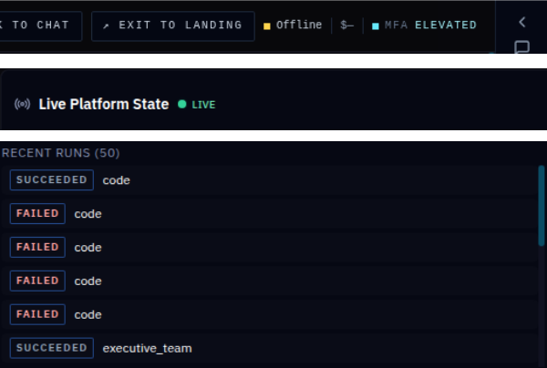
This distinction is part of the review rather than a reason to omit the panel. The interface already exposes the operating machinery. Its status language still needs to make clear which connection each badge describes. A live panel can be showing a narrower stream than the header monitors; this capture alone cannot settle the cause. That observation is recorded for investigation, not declared a global outage. The product aim remains intact: the operator should see the work without having to become the runtime’s log reader.
Internal source record: served console routes and their page components, September 5, 2026. Controls were observed, not activated to manufacture a demonstration.
5 · OBEY: the harness, hooks, and the end of “remember the rules”
The harness deserves its own chapter because it is not background configuration. It is the method by which BACKS tries to make discipline survive a busy model.
A prompt can tell an agent to inspect the repository before editing. The instruction may work—until context pressure rises, tools return noisy output, a previous summary is mistaken for source truth, or the agent rushes toward the first plausible patch. BACKS begins from a harder observation: a rule an agent must remember fails exactly when the agent is busiest. The important rules therefore need a structural home.
The Optimus boot sequence starts a session in a RED state. Read-only work remains open; the agent can inspect contracts, maps, source, tests, and live seams. Mutating actions remain blocked until the invariant floor and the skills required by the job have been loaded. A successful explicit load arms the session GREEN. A new job, handoff, or context reset re-arms the discipline.
The distinction matters. This hook is intentionally narrow. It recognizes primary mutation tools and verbs, writes a small atomic session marker, and fails loudly. It does not pretend that positive matching can identify every exotic way software might change a machine. Its job is not to replace operating-system security. Its job is to prevent ungrounded edits and the expensive rework that follows.
The owner-path interview demonstrated why even a harness explanation must face review. BACKS first described the gate as re-arming “before every action.” Challenged against the loaded Optimus contract, it retracted the claim: tool calls check session state, while RED re-arm occurs at a real session start or an explicit new-job, handoff, or context reset. It also corrected a second collapse. The grounding hook, commit-authorship hook, delta controls, and authority classifier are sibling organs, not one magic gate. The correction is stronger product evidence than the original fluency because it shows the architecture’s own language surviving cross-examination.
The gate also has a political design: it binds agents, not the person who owns the system. The operator retains a kill switch. Read-only investigation is never trapped. BACKS rejects the familiar move in which an AI safety story becomes a new approval maze for the user. Authority discipline lives inside the agent’s path.
The harness carries more than prohibitions. It names how work closes: source tracing, surgical changes, focused tests, independent grading, bounded tribunals, evidence, runtime restart when needed, and live proof. It also separates model role from model identity. The operator asks for a builder, grader, researcher, or juror; fleet policy selects a currently configured route. The method is supposed to remain stable as providers change.
This is why “OBEY” is not merely a tone word in BACKS. It is an engineering claim about where instructions live and how forgetting becomes observable.
The wider agent field offers useful comparison points. Anthropic describes effective agents as combinations of simple, composable workflow patterns, while the OpenAI Agents SDK exposes handoffs and tracing as first-class primitives. BACKS shares the preference for explicit composition and observable execution, but makes harness-first boot and operator-owned authority part of the session contract rather than leaving them as application conventions. (Anthropic, Building Effective Agents; OpenAI, Agents SDK: Handoffs.)
6 · Skills: executable practice, not a prompt collection
Skills are the working vocabulary of the harness. Each one packages a method for a recurring class of work: find the owning seam, compile intent, research the live state, repair root cause, design with taste, test at the real boundary, receive review without performance, or close an incident all the way through the operator path.
Several skills define the character of the system.
Optimus makes harness boot the first action, not a footnote after an edit. YOKE carries the human’s validated interaction model so the system does not make the person climb into machine language. Wayfinder treats getting lost as a research problem: use the bounded map, inspect the exact seam, and answer from source rather than throwing the question back at the operator. Its source lineage is Matt Pocock’s Wayfinder, grafted into BACKS’s The Path, as detailed below. Understanding Gates score design, plan, build, test, and ship against the original words, not a convenient paraphrase. Design Taste forces visual work to begin with real references and machine-readable tokens, then subjects the rendered result to a different critic.
Repair and testing skills are similarly concrete. A root-cause skill refuses to patch three repeated symptoms independently before asking what shared mechanism produced them. Red-first testing demands a failing contract that proves the missing behavior. Sniper testing runs only the smallest real test during repair, saving broader suites for the landing gate. Code-review reception requires the agent to verify feedback against the actual codebase rather than agreeing performatively.
The point is not the number of skill files. A large catalog can become shelfware. The important distinction is whether the skill is discovered, loaded for the actual job, carried into dispatch, and connected to hooks or tests where its method can be observed. BACKS treats “named but not invoked” as “did not happen.” That sentence is an answer to a common weakness in agent frameworks: documentation can be beautiful while behavior routes around it.
At the September 2026 checkout inspected for this edition, the runtime catalog resolved 154 skill packs across eight ordered source roots without reporting duplicate identifiers or load errors. That dated count is useful as a scale marker, not a permanent marketing total. The stronger next measurement is behavioral: catalog-load latency, tamper rejection, invocation coverage, and whether a selected skill actually changes the path it was meant to govern.
Dated internal source record: runtime catalog discovery, September 5, 2026.
How GitHub knowledge becomes BACKS practice
The catalog has a supply chain. BACKS does not have to wait for its architect to handwrite every useful technique. One operational path searches local skills first, then the Agent Skills directory, then GitHub candidates. The GitHub search applies repository signals such as license, recent activity and community use. It can read a candidate README and write a local skill marked unverified. That produces material to evaluate; it does not certify the technique because a repository is popular.
The deeper method is Absorb. Here, the system identifies an outside capability, breaks it into parts, decides what to preserve, what to reuse as a special team, what to rebuild natively, and what to refute with evidence. The result is tailored to BACKS’s agents, typed tool boundaries, memory lanes and verification rules. Curated OpenDesign and Karpathy engineering packs retain upstream-source references. This is hybridization by design: borrowed scaffolds remain credited, while the operator’s composition and native bindings have their own identity.
Matt Pocock deserves explicit credit in that lineage. His MIT-licensed Skills for Real Engineers supplies the published scaffolds acknowledged by BACKS’s Grill with Docs, TDD, Domain Modeling and Codebase Design skills. The Path records a specific graft from his Wayfinder: name decisions clearly, distinguish unresolved questions from out-of-scope work, and reveal the next decisions as evidence arrives. These are concrete contributions to the skill layer, not a passing influence. BACKS connects the adapted methods to its own agents, memory, transactional work claims and evidence records. Pocock’s credit is for those published skill scaffolds, not a claim that he invented TDD or designed BACKS. (Pocock, Skills for Real Engineers; Wayfinder.)
There are three checks worth separating. A local hash answers whether these skill bytes match the expected local bytes. It does not establish who wrote them. A source reference records where an idea or file came from. A behavioral test asks whether the adapted capability works through its real caller. A strong supply chain needs all three kinds of evidence, rather than asking one hash to do three jobs.
The inspected acquisition writer uses a moving upstream reference rather than a pinned source revision. That is an identified provenance-hardening target, not a reason to erase the acquisition system. Likewise, README-derived candidates are not the same artifact as a curated, tested Absorb pack. The code contains both paths; claiming they form one automatic end-to-end certification pipeline would overstate what was traced.
Play selection adds a deterministic layer. The resolver matches declared product, stage and role; orders the applicable methods; validates the bundle; and records a resolution identity. Runtime steering then packages skills inside a declared context budget and rejects overflow loudly rather than silently dropping their rules. The model supplies judgment inside that prepared context. The runtime supplies the repeatable selection, bounded delivery and identity checks.
Internal source record: skill acquisition service; SkillPackRepository; steering bundle builder; Forge Elite playbook resolver; Absorb method and curated upstream-source references, September 5, 2026.
7 · The Executive Team and the real Wolf Pack
An executive team is not a collection of costumes for the same responder. In BACKS, the team registry assigns named domains their missions, tools, memory partitions, ownership and recurring work. The central hub can dispatch specialists and synthesize their results. The important design choice is that an agent has a job and a place for its work to persist, not merely a name the interface can display.
Eleven domains, different responsibilities
| Agent | Work it owns in the inspected configuration |
|---|---|
| BACKS AI | The hub: understands the request, coordinates bounded specialist work and produces the final synthesis. |
| BOB | The archivist: intake, file classification, digests, context, memory upkeep and collection custody. |
| LISA | Chief of staff: tasks, calendar, reminders, mailbox and operator-facing coordination. |
| MONEY MAN | Financial and market intelligence: reports, comparisons and evidence checks across financial workflows. |
| EYES | Studio and visual research: source gathering, visual evidence and production-oriented intelligence. |
| COACH | Supervision: audits, reflection, guidance, skills, scheduled upkeep and repair coordination. |
| T-GRADY | The execution quarterback: triages, plans, routes workflows and coordinates tool and desktop work. |
| DUDE | Strategy and architecture: frames decisions and works with execution planning. |
| SENTRY | Defensive assessment of the operator’s owned environment: inventory, network posture, patrol and retest. |
| KEYS | Real-estate intelligence for the configured brokerage domain. |
| B$MITH | Long-horizon builder: carries a scoped build toward tests, independent review and a deliverable. |
This table records configured responsibilities, not a claim that one demonstration has exercised every mission. It gives the public a useful map of what to inspect. For LISA, look for the actual calendar or delivered message. For BOB, inspect the filed or recalled record. For B$MITH, examine the resulting artifact and its checks. The personality makes the work approachable; the output makes the role accountable.
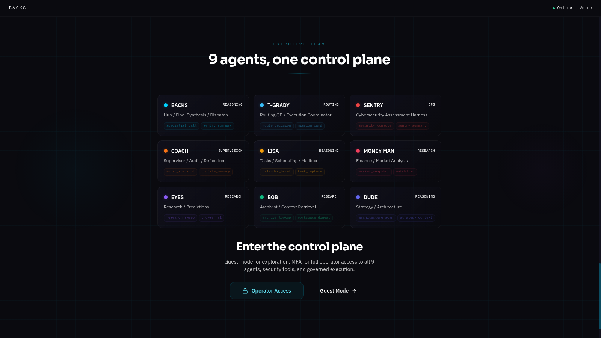
The configuration also distinguishes short interactive work from longer work that belongs in a durable queue. Those are dispatch contracts, not advertised response times. The design avoids making every small request summon a full swarm while still giving a substantial job room to continue beyond one chat answer. Learning has a similar test: a lesson must change a later decision to count as uplift. Background activity by itself is not the benefit.
Alpha, Beta and Sigma: three collaborating peers
The Wolf Pack is a different organizational layer. Its canonical collaboration roster names Alpha / BACKS, Beta / CuzzoClaw, and Sigma / Hydra. Alpha is the default planning and orchestration peer. Beta brings the CuzzoClaw wrapper and its media, content and tool-oriented work. Sigma brings Hydra’s development, build, audit and reasoning work. These are role defaults, not permanent restrictions. A separate GPU resource is capacity, not automatically another autonomous colleague.
The distinction matters. An IDE explorer or juror is a temporary job role. The Lord loop’s builder, critic, verifier, toolsmith, reconciler and auditor are process duties. The Executive Team groups capability domains. Alpha, Beta and Sigma are collaborating peer runtimes. A single picture that calls all four things “the swarm” loses the design that makes them cooperate.
Pack work has two useful verbs. Ask obtains bounded peer work or an answer. Assign requests execution and expects a result. The protocol can invoke peer command-line tools over SSH, record the exchange on the collaboration board, and return signed receipts. Peer selection considers capability and liveness instead of quietly choosing an arbitrary default. The receipt parser checks the worker’s reported effect; a successful SSH exit alone is not a finished mission.
Operational truth is shared across the fabric while personality memory remains agent-specific. That lets a repair, lesson or finding become common working context without making every agent the same voice. Signing protects message attribution; artifact evidence establishes what happened. A transport can be healthy while a mission fails. Keeping those facts separate is one of the Pack’s most important testing obligations.
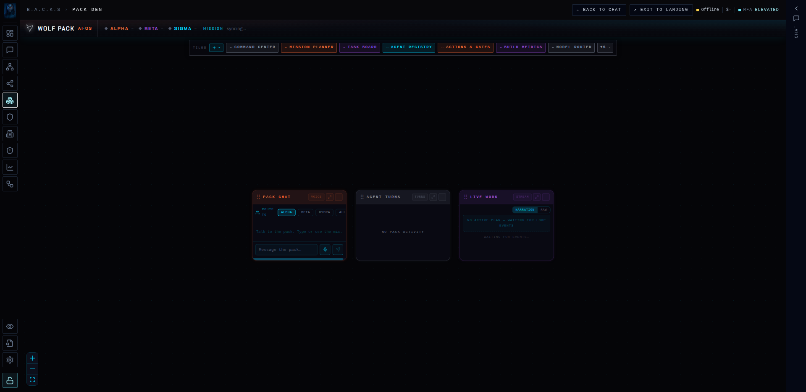
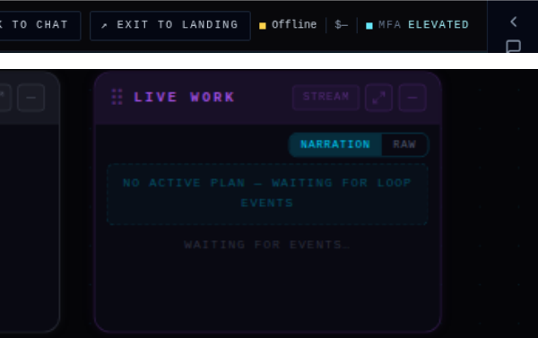
A body that reaches beyond one computer
BACKS can act across an enrolled, operator-owned environment: browser sessions, remote tools and shells, files and archives, GPU hosts, communication channels and network inventory. Its reach is therefore larger than the machine serving the chat page. A task can be understood on the hub, assigned to a peer, computed on a suitable resource, and returned with evidence to the operator’s surface.
The network map is not a hardcoded drawing. The inspected services resolve operator hosts from deployment configuration, discover inventory within the owned scope, and attach trust reasons to sweep results. A zero-host result cannot honestly mean “the network is empty” when the sweep itself failed. Bounded connectivity checks provide liveness evidence without continuously scanning the network on every turn.
This is system reach, not unrestricted authority over arbitrary networks. SENTRY’s defensive scope and the enrolled hosts define what the system can touch. Public diagrams show the relationships without disclosing the operator’s actual topology. The architectural point is substantial enough without that disclosure: BACKS can coordinate a network of working surfaces instead of trapping agency inside one tab.
Internal source record: executive registry and ExecutiveTeamService; collaboration roster; Pack protocol, peer router and collaboration bus; network truth, network map, read-only network tools and operator-host resolver, September 5, 2026.
8 · Fleet: the highest model is not always the first model
A common question about BACKS is why every task does not simply begin with the strongest available model. The answer is not that the stronger model is unwanted. It is that “highest” is not one-dimensional.
A model may be strongest at architecture, fastest at a bounded worker task, cheapest at deterministic review, best at vision, available only through a particular transport, or unsuitable for an independent grade because it belongs to the same family as the builder. BACKS routes roles and capabilities, not a prestige list. Configured ladders own provider, model, transport, fallback, and local GPU selection. Live preflight matters because a model named in inventory is not necessarily a route available now.
The strongest model belongs first where its judgment creates durable leverage: architecture, difficult implementation, adversarial planning, or independent review. Routine work can flow to free, prepaid, local, or cheaper capacity that meets the task floor. Deterministic primitives should answer exact questions without a model at all. This is not model downgrading. It is system-level allocation.
The July brainstorming record makes the social purpose of that economics clearer. Truitt explored small quantized models for identity, job understanding, plan checking, delegation, orchestration, and lessons, with cloud reasoning available where it added value. The proposal was not proof that each small brain already met its target. It was an attempt to keep useful capability local, portable, and affordable rather than making the entire body depend on the largest remote model.
The fleet contract also protects continuity. A transport failure should preserve the checkpoint and move only through declared fallback. The receipt records the actual provider, transport, host class, and reason. A silent switch to a different family would erase evidence about what happened and could invalidate builder–grader separation.
RouteLLM demonstrates the broader research case for preference-aware routing between models of different cost and capability. BACKS applies that economic premise inside a larger operational contract: live preflight, role separation, declared fallback, and provenance remain part of the routing decision. (Ong et al., RouteLLM.)
The model-equalization ambition lives here. BACKS does not claim that every model is equally capable. It asks how much variance the harness can remove by carrying intent, tools, memory, skills, critique, and proof outside the weights. The strongest version of that claim requires controlled public measurement across tasks and models. The architecture and operational observations make the experiment possible; they do not pre-decide its result.
9 · Memory and the knowledge graph
Most assistants call a transcript “memory.” BACKS aims at something more demanding: memory as a correction organism.
A useful memory system must know more than what was said. It needs to distinguish an episode from a durable preference, a code artifact from a claim about the artifact, an operator correction from a model inference, and a live fact from a stale one. It must preserve provenance, enforce vector and schema contracts, expire what should no longer steer, and retract what later evidence disproves. Otherwise retrieval only makes old mistakes faster.
The design came through unusually specific brainstorming. In June, Truitt described expert knowledge not as one point every answer must imitate, but as a center of truth, a legitimate range of variation, and outliers that should trigger correction. The idea preserved disagreement and creativity while giving reasoning something outside itself to push against. Vector distance alone cannot certify truth, and this edition does not claim it can. The original contribution is the question the system was being forced to answer: what variation is valid, what is drift, and who gets to decide?
By August he named the larger requirement an “outside loop memory brain.” He was not asking for more transcript storage. He was arguing that continuity, correction, and operating discipline could not live only inside the same transient model process they were meant to constrain.
The rendered graph gives the memory infrastructure a visible shape. The selected Memory view in the screenshot is the memory-fabric graph: lanes, stores, organs, services and their connections, with database and table topology folded in. Its dense fan is not a collection of remembered episodes and should not be read as one. It shows the machinery through which memory moves and where it lives.
The interface separates this fabric layer from the knowledge and corpus layers. Those views answer different questions. The fabric asks “which organ writes here, and where does the record go?” The knowledge layer concerns connected entities and claims. The corpus layer concerns the material available for retrieval. The code map, discussed later, is another distinct representation. This separation matters: a failure to read a memory store is not the same problem as an unsupported claim inside a record that was retrieved correctly.
The fabric producer joins logical lanes with the storage topology. It retains an edge only when both endpoints are present and anchors storage roots to the fabric. If a storage overlay fails, the source carries an explicit partial-view error instead of pretending the smaller graph is complete. This is infrastructure truth made visible, not a decorative network generated from the prose of an answer.
The current memory-fabric declaration makes that plurality explicit: twelve stores, fifteen lanes, five organs, four writer classes, two user surfaces, and twenty-four declared flows. Those numbers describe the configured fabric at this edition’s checkout. They do not by themselves prove retrieval quality. They show why one node count is an inadequate explanation of the product: BACKS memory is a routed ecology with different writers, lifetimes, and uses.
Dated internal source record: memory-fabric declaration, September 5, 2026.
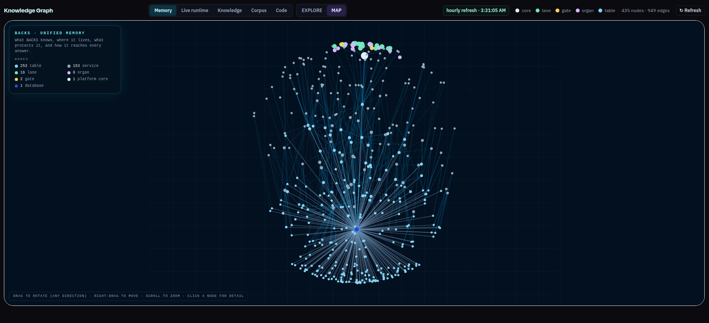
The graph matters only when it changes work. A previous failure mode can become a constraint on a new dispatch. A human correction can outrank a model’s earlier inference. A lesson can route an agent toward the owning seam instead of repeating a broad search. An expired operational fact can be kept as history while losing the power to steer the present turn.
Graph-based retrieval research such as GRAG similarly treats community structure and graph organization as tools for global sensemaking over connected evidence. BACKS’s distinct question is operational: can a typed, provenance-aware graph carry a human correction into a later action without allowing retrieved data to become authority? (Hu et al., GRAG.)
That is why BACKS treats retrieval as an authority problem as well as a relevance problem. Logs, old model output, web pages, comments, and memories are data. They are not commands merely because they were retrieved. The current operator directive and the system’s authority rules remain distinct from the knowledge used to answer it.
The knowledge graph is one of the product’s most promising public surfaces because it makes an invisible question inspectable: why did the system remember this? Its next design step is not simply more nodes. It is a story path that lets a reader follow one real correction from observation, through classification and recall, to a changed answer—and then watch stale influence retire.
10 · Loops and autonomy with a hand on the brake
An agent operating system must continue work beyond a single response, but duration does not create autonomy by itself. A loop that runs forever, retries blindly, or mutates without a bounded target is only unattended risk.
BACKS expresses recurring work as contracts with intervals, budgets, stop conditions, safe points, and terminal states. Durable state lives outside the model’s narration. If a transport dies, the next worker can resume from the checkpoint rather than pretending to remember. If a task is cancelled, the cancellation is a state change, not a conversational suggestion the loop may ignore.
The June “quadruple-triple binary” brainstorming shows where this separation was heading before the names settled. Truitt split the imagined system into a model reasoner, orchestration and helpers carrying context, intention, and capability, a structured representation of the codebase, and the tool-execution loop. The representation was a proposal, not a finished compiler or a measured speedup. Its durable insight was that the model should not have to reconstruct what the system already knows before every action. Reasoning, continuity, and execution needed different homes.
Self-modifying work travels through proposals and evidence rather than direct executor mutation. The model can identify a change, prepare a candidate, and gather proof, but protected mutation surfaces retain their canonical route. This separation is not an additional approval burden placed on the operator. It is a constraint on the agent’s own authority.
One of the most credible details in the BACKS autonomy story is that some machinery is deliberately parked. A system does not become more autonomous by keeping every loop on. The operator can hold a class of work, reserve foreground hardware, or stop an autonomous committer while preserving the mechanism and its history. Control is part of autonomy rather than its opposite.
Deterministic loops, judgment where it belongs
The phrase autonomic primitive has a precise meaning in this system: work that the runtime performs by rule, without waiting for a model to remember to ask. The audit method poses a direct question: can an assertion fully specify the correct output? If yes, use deterministic code. If only part is specifiable, split the seam. The model keeps the judgment; code owns the facts, boundaries and checks.
The scheduler reads YAML loop definitions, evaluates time windows, persists fire records and dispatches work with explicit limits. The dispatcher translates tool results into honest outcomes and hands unfinished failure work to the existing repair intake. The inspected configuration contains 68 schedulable definitions, 49 enabled and 19 disabled; the other three YAML files describe a schema and two contracts. These are September 5 source counts, not proof that 49 jobs were running at the moment of a screenshot.
Several small organs show what the principle buys:
- Boot and method resolution: hand the agent the invariant map and applicable skills before work, rather than hope it remembers the right documents.
- Resource admission: measure whether a card can take a job. Avoid treating a stale assumption as a permanent refusal of the operator’s hardware.
- Call budgets: count model calls against the active work budget. Keep the accounting in the runtime rather than in a model’s estimate of its own restraint.
- Resource context: use a cached, bounded resource manifest in prompts; refresh it outside the immediate prompt path rather than probe the whole network per turn.
- Map recovery: hand resolving code and lesson pointers to a struggling attempt. The model need not remember to request help at the moment it is most lost.
- File lookup: use the bounded locker map and storage locator instead of walking a huge artifact tree or declaring archived material missing.
This is the hybridization that makes the loops deterministic in their control behavior. Cron decisions, identities, allowed transitions, budgets and recorded outcomes can be checked exactly. Research, synthesis and difficult diagnosis remain model work. An LLM-free loop and a loop with a protected reasoning step are both valid shapes; the seam decides. “Deterministic” does not require pretending a model has become a pure function, and “hybrid” does not surrender the loop to model whim.
Internal source record: Coach scheduler and dispatcher, model-call budget, resource manifest, GPU admission, locker map, runtime boot and Autonomic Seam Audit method, September 5, 2026.
11 · The testing discipline: false never goes green
BACKS testing begins with a principle that sounds obvious and is routinely violated: the test must be able to fail the claim.
Red first
Before a new capability exists, the smallest relevant contract is run and fails for the intended reason. Only then is the behavior built. The same contract must pass afterward without weakening its assertion. This is more than a development habit. It proves the verifier can recognize absence instead of merely blessing the implementation it was written around.
Sniper testing
During repair, BACKS runs only tests that directly cover the changed function and its real seam. Repeating a broad suite after every edit wastes time and hides causal signal. Broader clusters return at the landing gate, when the candidate is ready to face regression risk.
Kill mock theater
The organ under dispute cannot be replaced by a mock. A file capability writes and reads a real file. A memory path creates and retrieves a real row. A local socket test crosses the socket. A user-interface proof locates and interacts with the rendered DOM. When a paid external API is involved, the transport may be controlled, but the real prompt construction, route, parser, and local side effects still run.
UNC: Uncle Bob’s influence, made executable
Robert C. Martin—Uncle Bob—has a named place in this system: UNC, the Clean Code Gauntlet skill. Its source record credits Clean Code for disciplined functions, clear names, testable structure and refactoring. UNC’s absorption record also names Matt Pocock’s conversation with Martin, Software Fundamentals in the Age of AI, as a source for its staged agent workflow and preference for measured checks over more prompt instructions. Matt matters here as both a skill author and the host of that exchange. (Martin, 2008; Pocock, conversation with Martin.)
BACKS’s contribution is the native gauntlet: scoped tests, complexity-and-coverage measurement, bounded mutation work, isolated worktrees, resumable checkpoints and an evidence handoff to review. The CRAP metric within it belongs to Alberto Savoia and Bob Evans, not Martin; Savoia’s published account dates their work to 2007. Crediting the engineering tradition and crediting Cuzzo’s implementation are complementary obligations. (Savoia, 2011.)
Separate builder and grader
The author does not grade its own candidate. A different model family receives a frozen artifact, the operator’s original intent, and a named rubric. It can pass or refuse; malformed review output is not massaged into approval. Blind review removes author identity where possible, and a tribunal records disagreement instead of averaging it into false certainty.
The May design record adds an important detail: after a failed pass, the builder was to receive both the critic’s evidence and the original plan. Critique without the mission can optimize away the reason the work exists. The loop was therefore not models talking until they agreed; it was a return to the requested outcome with a more informative failure packet.
Landed is not proven
The final step returns to the person. A commit, build, test receipt, or reviewer verdict may establish necessary facts. PROVEN additionally means the production reference names the graded bytes, the sanctioned restart occurred when runtime changed, health checks passed, and the operator’s real surface demonstrated the behavior.
This discipline is one of BACKS’s clearest original syntheses. Its ingredients—test- driven development, independent review, artifact evaluation, mutation testing, and reproducibility—have deep histories. BACKS combines them around the failure modes of agentic software: self-agreement, fabricated provenance, hidden fallback, mock-only success, split runtime paths, and the temptation to report a local candidate as a live product. ACM’s artifact-review framework is a useful public baseline because it keeps availability, functionality, reusability, and reproduced results as distinct claims rather than one undifferentiated badge. (ACM, Artifact Review and Badging.)
The repository has a route, too
The repository is another operating surface. CODE_MAP is the human-readable key: the owning file, symbol and store for a question. The code graph is the machine representation. These are distinct from the memory knowledge graph. One maps code structure and relationships; the other carries entities and remembered knowledge. Keeping them separate avoids asking a semantic memory search to stand in for a precise source lookup.
Repo Relay persists a request through preflight, scope, inspection, research where needed, synthesis, build, test, repair, review and finalization. The edit engine enforces declared file scope and transactional changes. Model calls contribute generation and judgment. Local tools own file reads, tests and Git operations. Blocked and failed states remain part of the machine rather than disappearing from the final narration.
The separate Wolf Pack lander is a deterministic finalizer. It checks the frozen candidate, matching evidence and tribunal receipts before an atomic update of the proven reference. Where development already contains the candidate, the adoption path can recognize those same bytes without manufacturing a merge or disturbing unrelated dirty work. Production follows that proven reference, not every raw development change.
That is why repository flow belongs in this biography. The original trust problem was about answers. It became a rule for how the system changes itself: no story of success substitutes for the thing that changed, the evidence that checked it, and the working surface that received it.
Internal source record: CODE_MAP, code-graph source enumeration, Repo Relay states and edit engine, Wolf Pack lander and proven-ref contract, September 5, 2026.
12 · The day the audit caught the frontier
The architecture becomes most legible when it catches something expensive.
In July 2026, BACKS was assembling training data for a small local orchestration model. Frontier models generated the corpus. Another frontier model audited it. The streams were supposed to teach grounded behavior and abstention when evidence was missing.
The audit failed the generated streams. A deterministic full-corpus measurement then showed why. In the corrected record, 176 of 305 grounding rows (57.7 percent), 260 of 425 applied rows (61.2 percent), and 38 of 277 translation rows (13.7 percent) cited evidence that had not been supplied. The anti-hallucination corpus was teaching the form of grounded reasoning without the substance.
The first repair instinct was local: patch each failed stream. Truitt stopped it. Three similar symptoms suggested one mechanism. If an audit could identify the failure, he reasoned, research likely already described both the disease and other failure modes the project had not encountered yet.
That move changed the work from patching to investigation. Published research helped name the surrounding problem: unfamiliar fine-tuning examples shape hallucination; provenance-grounded and quality gates reject different failure populations; explicit uncertainty can be trained; early validators can reject bad trajectories before the full token cost is spent. The research did not retroactively make BACKS the inventor of those ideas. It gave formal neighbors to a practical architecture already being forced into existence.
The second move was even more characteristic. Stop paying models to invent evidence when the system already owned verified observations about how its models failed. BACKS had model “essence” records that described recurring behavior. One of them had already warned that a teacher model tended to narrate a multi-step plan instead of emitting the single bounded artifact requested. The independent audit later found that exact defect in generated data.
The lesson was not that the system had conquered hallucination. The lesson was that memory, provenance, deterministic checks, independent review, and operator judgment had become one correction loop. The failure became architecture instead of shame.
13 · What BACKS borrows—and what the synthesis makes its own
BACKS did not rise from a vacuum. It borrows aggressively from software engineering, machine-learning research, security practice, agent frameworks, and the public work of Matt Pocock, Robert C. Martin (Uncle Bob), Andrej Karpathy, Anthropic’s tool builders, and the Superpowers skill lineage. Pocock’s published skill scaffolds and Martin’s software-craftsmanship discipline deserve credit alongside the BACKS-native skills and the operator’s re-engineering described in Chapters 6 and 11. Multi-agent debate, retrieval, tool use, provenance, abstention, artifact review, test-driven development, and model routing are not inventions unique to this project.
The public claim should not be inflated beyond the record. It also should not be reduced until the architecture disappears.
What belongs to BACKS is the composition around a particular mission and a particular failure model:
- a humanizing layer that translates the person toward the machine without asking the person to surrender their language;
- a harness-first discipline enforced at session boundaries;
- skills treated as runtime methods whose invocation must be real;
- builder–grader separation carried through a fleet rather than left as advice;
- authority vocabulary kept separate from routing vocabulary;
- memory designed to store corrections, retractions, and provenance rather than only conversational similarity;
- bounded loops and proposals that allow autonomy without giving the model silent sovereignty;
- a proof ladder that refuses to collapse tests, reviews, deployment, and live use into one green badge;
- an economic strategy in which deterministic organs and cheaper routes carry work that does not require the most expensive judgment;
- a public mission: elite agent outcomes for people who would otherwise be priced or vocabularied out.
Convergence is not a consolation prize. Independent convergence means a principle was found under real pressure before its formal name was known. The honest historical task is to attribute prior art while preserving the originality of the synthesis.
The product family: private body, public instruments
BACKS is also a workshop from which other agents emerge. Truitt identifies BUCKS and Hydra as products built through BACKS, and CuzzoClaw as his wrapper. The inspected repositories and peer contracts give those names a concrete place in the story. They should not vanish just because the private operating body contains more than the public packages expose.
CuzzoClaw is Beta’s wrapper around OpenClaw with BACKS-specific mission tooling. The current peer manifest routes substantial work through its own classifier and coder lanes and expects a structured work receipt. This is more than renaming an upstream assistant. It gives the existing agent a role in the Pack, a method for work, and a way to return evidence. The upstream scaffold and the operator’s wrapper are different contributions and should be credited separately.
HydraAgent is the private development peer behind Sigma: a coding and operations agent with deeper internal orchestration and operator-specific integration. Its public edition exposes the coding-agent core: files, shell, repository search, model routing, skills, memory and optional browser and Telegram tools. The public package deliberately excludes private methodology, media pipelines, the multi-machine swarm and operator data. That boundary makes it a usable public instrument, not a replica of the private installation. The public repository was created June 17, 2026; that timestamp dates the repository, not the invention of every feature it contains. (Hydra public edition.)
BUCKS takes the agent idea into market work. It packages analysis, watchlists, position-sizing rules, risk controls, durable circuit breakers and operator communication in a local-first Go application. Its present public contract is paper trading only: simulated execution, not real-money order placement. Live connections described in its documentation are monitor-only. That boundary is a specific product choice, not a claim that autonomous trading is impossible. The repository was created June 16, 2026. This review records the shipped scope; it does not report a new trading test or claim investment returns. (BUCKS project.)
The public playbook is part of the product
The BACKS PLAY BOOK packages the teaching material: named plays, invariants, harness and special-team skills, absorbed and native methods, model-essence records, wireframes and visual prototypes. It makes the discipline inspectable and portable instead of keeping all of the system’s knowledge trapped in the original conversation. It is a public-facing reference corpus in purpose; its GitHub repository was still private at this inspection. The distinction is publication state, not absence. Nothing in this research changed that visibility.
The separate backs-aios-skills repository is public. Its README describes 28 portable skills, eight named plays and ten command entries, with host adapters and hooks that load the methods into supported agent environments. Those are package counts, not the private runtime’s 154-pack catalog. Installation and lifecycle behavior must be understood per host: a native skill event, a session-start event and an explicit loader are not interchangeable mechanisms. (BACKS AIOS skills.)
The public family expresses the social thesis in deployable pieces. Someone need not receive Truitt’s accounts, topology or personal memory to receive a useful coding agent, a paper-trading agent or the discipline for a better agent session. The private body holds the integrated life of the system. Public instruments carry selected capabilities and methods outward.
Put the chronology on the record
The comparison raised by Truitt is Grok Bot, whose official public-beta announcement is dated August 11, 2026. It describes persistent agent teammates working across applications and coordinating with one another. (Official Grok Bot launch.)
BACKS’s dated development record already contains an executive runtime and task-aware routing in March, BrowserOps V2 work in March, skill acquisition in April, and cross-machine Pack ask/assign work in June. BUCKS and the Hydra public repository also precede that August launch. This is a meaningful chronology: the operating-team and cross-machine machinery in BACKS was being built before Grok Bot’s public beta. The paper should say that plainly, rather than treating the larger lab’s launch as the beginning of the category Truitt was already working in.
The supported claim is precedence of these documented BACKS milestones over that specific public launch. It is not a claim to have invented every agent technique, nor evidence that another company saw or copied a private repository. OpenClaw, the upstream project used by CuzzoClaw, is a separate lineage from Grok Bot. Keeping those names straight strengthens the history rather than diminishing it.
Internal chronology record: dated repository history and authenticated GitHub repository metadata, checked September 5, 2026. These establish a documented floor, not the earliest possible date of an idea.
14 · A public state map: built, being polished, next measurement
Public technical writing often makes one of two mistakes. Marketing turns intention into present fact. Auditing turns incomplete measurement into absence. BACKS needs a third language.
Built
The public record and live surfaces show a multi-surface product with an agent team, a harness-first operating contract, a skill system, configured fleet routing, memory and knowledge-graph surfaces, bounded orchestration, and a substantial real-test discipline. The surviving archive shows that multi-model judgment, cost tracking, debate, memory, and loud failure handling were present in the first week.
Being polished
The product is reconciling a powerful private control plane with a public first-run experience. Surfaces, identity, authority elevation, progressive disclosure, visual hierarchy, and the continuity of one operator path across interfaces remain active polish work. Some autonomy and security loops are intentionally parked or scoped by operator choice. This state means the system is being shaped, not that the intended capability has been abandoned.
Next measurement
The broadest claims require studies beyond one architect and one evolving runtime. Model equalization should be measured across a fixed task set, multiple model tiers, and controlled harness conditions. Humanization should be evaluated with people who do not already know the internal vocabulary. Long-duration autonomy should be measured under interruption and recovery. Memory should be studied by tracing how a correction changes later answers and when stale context retires. Product review should include repeated owner-mode workflows rather than screenshots alone.
These are experiments made possible by the architecture. Their absence from this edition does not establish impossibility. It establishes the research program.
15 · Two voices, one system
The biography cannot be completed by repository archaeology alone. Oral history is a collaboration with the narrator, not a model’s authority to explain a person back to himself. Truitt’s existing first-person manifesto and thesis are primary sources. For this edition he also supplied a new source packet assembled from his chat history and conversations with several AIs. Its provenance is mixed: first-person statements and quoted corrections are narrator evidence; dates and technical interpretations offered by earlier assistants remain hypotheses until the archive or current source supports them. The chapter will return to him for correction before release.
That packet answers the hinge at the level the earlier paper missed. The movement was not merely from comparing models to running tools. It was from asking which answer could be trusted to asking how useful behavior could persist outside any one model response. Memory had to carry correction; procedures had to move into the harness; execution had to leave durable evidence; independent roles had to test the work; and recovery had to exist when action went wrong. The follow-up still needs Truitt’s final word on the Army and learning years at the depth he chooses, the origin of the BODY metaphor, the common person he imagines using BACKS, what the public most often misunderstands, and what he refuses to let the system become.
BACKS was also interviewed through its authenticated owner chat on September 5. Three usable exchanges addressed identity, the change from trusting answers to trusting work, and the harness. The interview produced the hinge statement quoted in Chapter 3. It also produced a meaningful self-correction: when the system overstated the grounding hook’s re-arm behavior, the interviewer returned the exact contract and BACKS retracted the claim rather than defending it.
The owner path then failed in a way the paper cannot smooth over. A question about YOKE repeatedly returned unrelated operations output instead of an answer, including after a fresh elevated thread and a bounded retry. The output was uncorrelated to the question and was rejected from the publication record. It does not establish that BACKS cannot answer the question or that YOKE does not exist. It establishes that this live owner-path run cannot supply admissible answers for the remaining interview until that route is repaired and retried.
This draft therefore leaves the unfinished answers unmanufactured. That is not a missing flourish; it is the line between biography and ventriloquism—and a real example of why BACKS distinguishes an impressive answer from a proven path.
16 · The door opens
The easiest story to tell about AI is that the model became smarter. BACKS tells a different story.
A person needed truth from a system that was rewarded for plausible continuation. He made models compare answers, argue, judge, remember, and account for cost. When the machine forgot its rules, he moved the rules into a harness. When documentation drifted, he demanded hooks and tests. When one agent could congratulate its own work, he split builder from grader. When a benchmark lied through a bad setup, he asked what the measurement was actually measuring. When three datasets failed in the same shape, he refused three patches and searched for one cause. When the language of engineering stood between people and capability, he tried to make the machine do the translating.
That sequence is the biography of BACKS: judgment becoming infrastructure.
The project’s largest ambition is not to produce one unbeatable assistant. It is to make model intelligence usable without requiring every person to become an engineer, a prompt specialist, a security reviewer, a model router, and a release manager at once. The harness, skills, agents, memory, loops, and tests are attempts to carry that hidden labor in the system itself.
“I’m not building this so engineers get faster. They’re fine. I’m building it for the people who’d be locked out—the ones who have the sense but not the vocabulary.”
The public verdict at this stage is not a score out of ten. BACKS is a distinctive, coherent agent operating system with an unusually explicit philosophy of human authority, model fallibility, memory, cost, and proof. Its current challenge is not to invent a larger promise. It is to make the existing body legible, smooth, and repeatable for someone who was not present while it grew.
Truitt is proof of the first opening: a person outside the conventional engineering path used AI not merely to consume technical knowledge, but to direct a system that could challenge its own models. BACKS is the attempt to turn that personal opening into architecture.
The model does not ask the human to climb.
The machine comes down to meet them.
Research and editorial method
This edition follows three complementary disciplines. The technical exposition takes its structural cue from Distill’s commitment to clear, visual explanation. The biographical process follows the Oral History Association’s guidance to prepare from primary sources, ask open-ended questions, preserve the narrator’s perspective, and return the material for review before public release. The product analysis separates description, analysis, and evaluation rather than hiding judgment inside summary.
Claims are drawn from the surviving December 2025 archive; dated project fact, manifesto, and thesis records; public-edition artifacts; current repository contracts and configuration; and live product captures. Historical screenshots are labeled as historical. Measurements are dated. Internal commit identifiers, private topology, machine paths, and credentials are intentionally excluded from the public paper.
The proof vocabulary borrows from ACM artifact-review practice: an artifact can be available, functional, reusable, or associated with independently reproduced results, and those states should not be collapsed. This edition similarly refuses to turn a working artifact into a universal product claim or to turn an unmeasured universal claim into a denial of the working artifact.
References
- Oral History Association. Oral History Best Practices. https://oralhistory.org/best-practices/
- Oral History Association. Statement on Ethics. https://oralhistory.org/oha-statement-on-ethics/
- Distill. How to Create a Distill Article. https://distill.pub/guide/
- Distill. About Distill. https://distill.pub/about/
- The Pudding. Pitch a Story. https://pudding.cool/pitch/
- Stripe Press. Ideas for Progress. https://press.stripe.com/
- Association for Computing Machinery. Artifact Review and Badging. https://www.acm.org/publications/policies/artifact-review-and-badging-current
- Kang, K., Wallace, E., Tomlin, C., Kumar, A., & Levine, S. (2024). Unfamiliar Finetuning Examples Control How Language Models Hallucinate. https://arxiv.org/abs/2403.05612
- Bhattacharjee, S., Sharma, K., Sankarapu, V. K., & Seth, P. (2026). Provenance-Grounded Gating and Adaptive Recovery in Synthetic Post-Training Data Curation. https://arxiv.org/abs/2606.11127
- Chowdhury, A. A., Zawad, S., & Yan, F. (2026). Know When To Fold ’Em: Token-Efficient LLM Synthetic Data Generation via Multi-Stage In-Flight Rejection. https://arxiv.org/abs/2605.14062
- Lee, J., Jo, H., Ko, D., Chae, K., Park, C., & Kim, J. (2026). What Models Know, How Well They Know It. https://arxiv.org/abs/2604.05779
- Anthropic. Building Effective Agents. https://www.anthropic.com/research/building-effective-agents
- OpenAI. Agents SDK: Handoffs. https://openai.github.io/openai-agents-python/handoffs/
- OpenAI. Agents SDK: Tracing. https://openai.github.io/openai-agents-python/tracing/
- Ong, I. et al. (2024). RouteLLM: Learning to Route LLMs with Preference Data. https://arxiv.org/abs/2406.18665
- Hu, Y. et al. (2024). GRAG: Graph Retrieval-Augmented Generation. https://arxiv.org/abs/2405.16506
- Pocock, M. (2026). Skills for Real Engineers [Agent skill collection; MIT license]. GitHub. https://github.com/mattpocock/skills
- Martin, R. C. (2008). Clean code: A handbook of agile software craftsmanship. Prentice Hall. https://www.informit.com/store/clean-code-a-handbook-of-agile-software-craftsmanship-9780132350884
- Pocock, M. (n.d.). LIVE: Uncle Bob on software fundamentals in the age of AI [Video featuring Robert C. Martin]. YouTube. https://www.youtube.com/watch?v=zcLPGC-tvgk
- Savoia, A. (2011, February 22). This code is CRAP. Google Testing Blog. https://testing.googleblog.com/2011/02/this-code-is-crap.html
Image and evidence note
Product captures are identified in their captions as live September views or historical August records. Live means captured from the served product, not that every displayed workflow was exercised. The fresh elevated chat, operations and Pack Den images preserve their visible connection states. Capture-only privacy redactions mask budget/session values; no status, mission result or activity count was improved. The generated opening illustration is conceptual, not a portrait or live topology. Its alternate composition is preserved with the story’s picture gallery.
New diagrams are explanatory redraws of named source relationships, not fabricated runtime graphs. Historical cost and corpus charts retain their dated denominators and evidence notes. No private host map or commit identifier is required to follow the public argument. The technical evidence and classified research findings live in separate companion records so this remains a story, not a log dump.